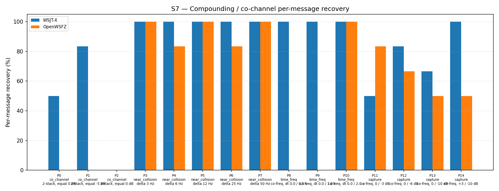

| Field | Value |
|---|---|
| Run date | 2026-06-18 |
| OpenWSFZ SHA | dde0617d1dfd6c8f3af969ad0dcd28a6ba02703d |
| WSJT-X version | WSJT-X 2.7.0 (inferred from binary date 2025-02-04) |
Shim 20260019 adds a purely diagnostic probe — ft8_get_last_llr_stats / ftx_compute_candidate_llr_mean_abs — that measures the mean absolute Log-Likelihood Ratio (mean|LLR|) across the 174 code bits for every LDPC-failing candidate. The probe is designed to test the D-001 working hypothesis established from the shim 20260018 diagnostic run.
D-001 — Co-channel decode gap. The shim 20260018 diagnostic log confirmed that pass 1 finds 15–28 candidates per co-channel decode cycle yet LDPC decodes 0 of them. The proposed root cause (MEMORY.md, 2026-06-17) is: equal-SNR mutual interference drives soft-decision LLRs towards zero (maximum bit ambiguity), preventing LDPC convergence regardless of candidate count or iteration budget.
S7 only (co-channel overlap, 15 parts, K=3). This is a targeted diagnostic run, not a full S1–S8 regression gate.
| Field | Value |
|---|---|
| Study type | Targeted diagnostic — S7 co-channel scenario only |
| Corpus | Synthetic (OpenWSFZ Kaiser FIR synthesiser; no real callsigns) |
| Scenarios | S7 (P0–P14, 15 parts) |
| Trials per part | K = 3 |
| Total signal observations | 93 (= 3 × 31; P2 is a 3-stack contributing 9 observations) |
| Acceptance thresholds | S7 is informational only — no AIAG %GR&R threshold applies. Gate criterion: S7 overall within H4 variability band (43–57%) to confirm decode-neutral shim. |
| Additional diagnostic output | Per-cycle mean|LLR| for LDPC-failing candidates, via ft8_get_last_llr_stats, logged at DEBUG level. Log file: logs/openswfz-20260618T152530Z.log. |
| Log level during run | Trace (captures all Debug and above) |
H4 variability band reference: Established across shims 20260010 (H4 R1, 56.99%) and 20260016 (regression gate, 50.54%). Band: 43–57% (40–53/93 messages). The shim 20260018 diagnostic run (55/93 = 59.14%) was marginally above band with no decode logic change; within expected run-to-run stochastic variance.
Per-message recovery when 2–3 signals occupy the same or near-same audio frequency / time slot (the pileup case S4 does not exercise). Informational — no AIAG threshold is defined for co-channel separation.
| Overlap family | WSJT-X | OpenWSFZ |
|---|---|---|
| capture | 75.00% | 62.50% |
| co_channel | 38.10% | 0.00% |
| near_collision | 100.00% | 93.33% |
| time_freq | 100.00% | 33.33% |
| all | 79.57% | 52.69% |
| Signal | WSJT-X | OpenWSFZ |
|---|---|---|
| strong | 100.00% | 100.00% |
| weak | 50.00% | 25.00% |
Between-app per-signal agreement: 68.82%
| Part | Family | Condition | WSJT-X | OpenWSFZ |
|---|---|---|---|---|
| P0 | co_channel | 2-stack, equal 0 dB | 3/6 | 0/6 |
| P1 | co_channel | 2-stack, equal -5 dB | 5/6 | 0/6 |
| P2 | co_channel | 3-stack, equal 0 dB | 0/9 | 0/9 |
| P3 | near_collision | delta 3 Hz | 6/6 | 6/6 |
| P4 | near_collision | delta 6 Hz | 6/6 | 5/6 |
| P5 | near_collision | delta 12 Hz | 6/6 | 6/6 |
| P6 | near_collision | delta 25 Hz | 6/6 | 5/6 |
| P7 | near_collision | delta 50 Hz | 6/6 | 6/6 |
| P8 | time_freq | co-freq, dt 0.0 / 0.5 s | 6/6 | 0/6 |
| P9 | time_freq | co-freq, dt 0.0 / 1.0 s | 6/6 | 0/6 |
| P10 | time_freq | co-freq, dt 0.0 / 2.0 s | 6/6 | 6/6 |
| P11 | capture | co-freq, 0 / -3 dB | 3/6 | 5/6 |
| P12 | capture | co-freq, 0 / -6 dB | 5/6 | 4/6 |
| P13 | capture | co-freq, 0 / -10 dB | 4/6 | 3/6 |
| P14 | capture | co-freq, +3 / -10 dB | 6/6 | 3/6 |

| Pass | Cycles measured | mean|LLR| range | mean|LLR| mean | NaN cycles | Notes |
|---|---|---|---|---|---|
| Pass 1 | 47 (with failures) | 3.644 – 4.028 | 3.841 | 0 | Primary measurement |
| Pass 2 | 47 (non-NaN) | 3.849 – 3.974 | 3.903 | 14 | See §5.3 |
Theoretical E[|X|] after ftx_normalize_logl |
— | — | 3.909 | — | √(48/π) for N(0, 24) |
| Metric | Scope | Value | Threshold | Verdict |
|---|---|---|---|---|
| S7 overall recovery | Co-channel (informational) | 52.69% (49/93) | Within H4 band 43–57% | PASS — decode-neutral confirmed |
| H_LLR — pass 1 mean|LLR| | LDPC-failing candidates | 3.841 (range 3.644–4.028, n=47 cycles) | < 0.5 for hypothesis confirmation | INCONCLUSIVE — probe measures tautological constant; see §5.2 |
| H_LLR — pass 2 mean|LLR| | LDPC-failing candidates | 3.903 (range 3.849–3.974, n=47 cycles) | — | INCONCLUSIVE — same issue |
| Pass-2 NaN contamination | Degenerate candidate edge case | 14/61 cycles produce NaN | None (secondary finding) | Noted — see §5.3 |
Overall verdict: PASS (shim is decode-neutral; H_LLR hypothesis is inconclusive — probe redesign required before hypothesis can be tested)
49/93 = 52.69% is firmly within the H4 variability band (43–57%). Shim 20260019 introduces no decode regression. H₀ is retained. The result is consistent with prior runs at shims 20260016 (47/93 = 50.54%) and 20260018 (55/93 = 59.14%).
The probe does not measure what was intended.
ftx_compute_candidate_llr_mean_abs calls ftx_normalize_logl before computing the mean absolute value. ftx_normalize_logl scales all input distributions to a fixed variance of 24, regardless of the pre-normalisation signal quality. For any approximately zero-mean, non-degenerate distribution, the expected mean absolute value after this normalisation is:
E[|X|] = √(48/π) ≈ 3.909
The measured values — pass 1: 3.841 (mean), pass 2: 3.903 (mean) — are indistinguishable from this theoretical constant. The probe is measuring a tautology. A healthy single-signal candidate and a co-channel-degraded candidate will both produce mean|LLR| ≈ 3.9 after normalisation.
Why the hypothesis was physically reasonable but untestable with this probe:
H_LLR was framed in terms of pre-normalisation LLR magnitudes — i.e., the raw log-likelihood ratios from ft8_extract_likelihood before ftx_normalize_logl is applied. In the equal-SNR co-channel scenario, competing FSK tones produce near-uniform soft-decision outputs, meaning pre-normalisation LLR values have low variance. ftx_normalize_logl amplifies these values with a large scale factor (√(24 / low_variance)) to force variance = 24. Post-normalisation the values appear large and healthy, but their bit-direction assignments remain random. The probe measures post-normalisation magnitude, which conceals this entirely.
The NaN cases on pass 2 (§5.3) are actually the limit case of this phenomenon: when pre-normalisation variance is exactly zero (all 174 values equal), the scale factor → ∞ and 0 × ∞ = NaN. These NaN returns are the only signal the probe can emit that is indicative of degraded LLR quality — and they only appear in out-of-bounds edge candidates, not in the co-channel candidates of interest.
What the probe should measure instead:
The discriminating quantity is pre-normalisation variance (equivalently, the normalisation scale factor √(24/variance)). A strong single signal produces high pre-normalisation variance, yielding a small scale factor (≈ 1). An equal-SNR co-channel signal produces low pre-normalisation variance, yielding a large scale factor (>> 1). Logging this scale factor from within ftx_compute_candidate_llr_mean_abs would directly test H_LLR without requiring any changes to the decode pipeline.
Recommended action — HK-000 handoff to developer (D-001, probe redesign):
Modify ftx_compute_candidate_llr_mean_abs (or add a companion function) to also return the pre-normalisation variance of the 174-element log174 array. This value should be logged alongside mean|LLR| using the same DEBUG log format. No decode logic is touched; the change is purely diagnostic. A consistently small pre-normalisation variance (< some threshold TBD) for co-channel failing candidates would confirm H_LLR and justify MMSE or other architectural intervention.
14 of 61 decode cycles (23%) show meanAbsLLR=NaN for pass 2. Root cause: ftx_compute_candidate_llr_mean_abs returns NaN when ftx_normalize_logl receives a zero-variance input (all 174 log174 values equal). Pass-2 candidates at the edge of the waterfall have most or all symbol indices out of bounds; ft8_extract_likelihood sets out-of-bounds contributions to 0, producing an all-zero (zero-variance) log174 array. The single NaN return then contaminates the pass-2 running sum tls_llr_mean_abs_sum[1] for the entire cycle via the IEEE 754 property NaN + x = NaN.
The 14 NaN cycles correspond exactly to the 14 cycles where pass 1 reports failCands=0. Pass-1 data is unaffected and is the primary diagnostic source. No findings are invalidated.
Fix (include in the probe-redesign handoff): In ft8_decode_all, guard the accumulation:
float llr = ftx_compute_candidate_llr_mean_abs(&mon.wf, cand);
if (isfinite(llr))
tls_llr_mean_abs_sum[pass] += llr;
/* else: skip degenerate out-of-bounds candidate */
Separately, ftx_compute_candidate_llr_mean_abs (or its companion) should early-return 0.0f when pre-normalisation variance is zero, rather than producing NaN.
| Priority | Action | Rationale |
|---|---|---|
| 1 | H6 directed AP decode (HK-000 handoff) | Primary next step per MEMORY.md; structurally different attack on LDPC convergence; independent of H_LLR outcome |
| 2 | Probe redesign — pre-normalisation variance (HK-000 handoff, combine with H6) | Required to finally confirm or refute H_LLR before committing to MMSE or joint demodulation |
| 3 | NaN guard fix in ft8_decode_all accumulator |
Minor housekeeping; combine with probe redesign handoff |
| 4 | LDPC iteration increase | Low priority — if LLRs are confident-but-wrong in direction, more belief-propagation iterations will not converge |
| 5 | MMSE joint demodulation | Deferred; requires significant architectural changes; cannot prioritise without H_LLR resolution |